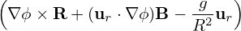

Fig. 26: Left: Projection of a ï¬eld line on the poloidal plane. Right: the value of Δ and α along
the magnetic ï¬eld line. Here α is deï¬ned by α = ϕ−Δ, where ϕ is the usual cylindrical toroidal
angle and Δ = ∫
0𝜃d𝜃.
The generalized toroidal angle α is numerically calculated in my code. To verify B ⋅∇α = 0 along a magnetic ï¬eld-line, ï¬gure 26 plots the values of α along a magnetic ï¬eld line, which indicates that α is constant. This indicates the numerical implementation of the ï¬eld-aligned coordinates is correct.
Â
Let us introduce the binormal wavenumber, which is frequently used in presenting turbulence simulation results. Deï¬ne the binormal direction s by
s =  , ,
|
which is a unit vector lying on a magnetic surface and perpendicular to B. The binormal wavenumber of a mode is deï¬ned by
 | (339) |
where p is the phase of the mode. Consider a mode given by exp(ikψψ + im𜃠− inζ), then the phase p = kψψ + m𜃠− nζ. Then kbn is written as

![nB ⋅
kbn = |B-×∇-Ψ|[q∇Ψ × ∇𜃠− ∇Ψ × ∇ ζ].](tokamak_equilibrium438x.png) | (342) |
Using Eq. (262), i.e., B = −(∇ζ ×∇Ψ + q∇Ψ ×∇ğœƒ), the above expression is written as

 | (343) |
which indicates the binormal wavenumber generally depends on the poloidal angle. For large aspect-ratio tokamak, we have Bϕ ≈ B, q ≈ Bϕr∕(BpR). Then Eq. (343) is written
 | (344) |
which indicates the binormal wavenumber are approximately independent of the poloidal angle. Since m = nq on a resonant surface, the above equation is written |kbn|≈ m∕r, which is the usual poloidal wave number. Due to this relation, the binormal wavenumber kbn is often called the poloidal wavenumber and denoted by k𜃠in papers on tokamak turbulence. In the GENE code, y coordinate is deï¬ned by y = αr0∕q0. Then the ky of a mode of toroidal mode number n is given by ky = 2π∕λy where λy = λαr0∕q0 and λα = 2π∕n. Then ky is written as ky = nq0∕r0, which is similar to the binormal deï¬ned above. For this reason, ky of GENE code is also called binormal wave-vector, which is in fact not reasonable because neither ∂r∕∂y or ∇y is along the binormal direction.
Â